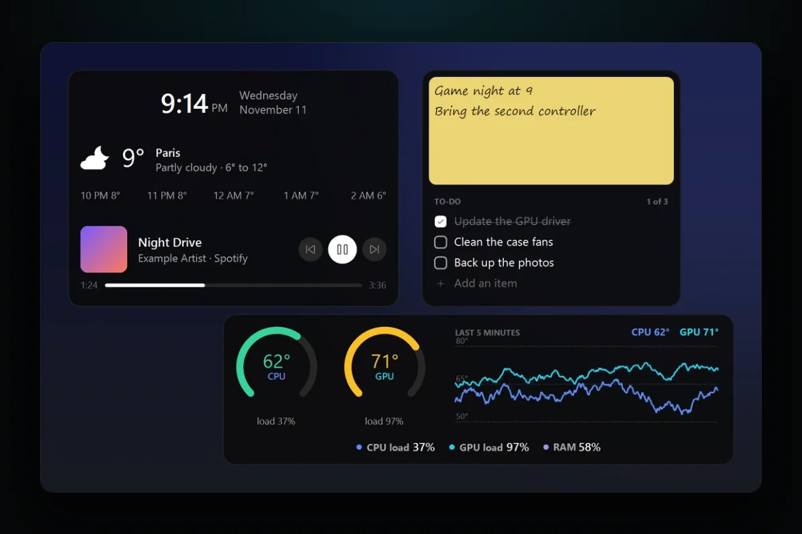

PC problems · Tools
How to get desktop widgets on Windows 11, with CPU temperature
Windows 11 keeps its widgets on a board beside the taskbar. How to get desktop widgets on Windows 11 that stay where you put them, with a clock, notes, the weather and your CPU and GPU temperature, and the other options people use.

The short answer
Windows 11's own widgets open on the Widgets board, from the taskbar or Windows key + W, and Microsoft doesn't describe a way to pin one to the desktop. For widgets that stay on the desktop, use an app. RigSight is free and open source, and builds them from tiles such as a clock, a note, the weather or your CPU temperature.
Windows 11 has widgets, but they open on the Widgets board, a panel that slides in from the taskbar. Close it and they're gone again. If you want desktop widgets on Windows 11 that stay where you put them, like a clock, a note or your CPU temperature, you need an app that draws them. I wanted that on my own PC, and I wanted widgets good enough to use instead of Windows' own, so in RigSight 1.9.0 I rebuilt its widgets from tiles. Here's what Windows gives you, how RigSight does it, and the other options people use.
Where Windows 11's own widgets live
Most of the time, Windows 11 shows the weather on the taskbar. Select it, press Windows key + W, or swipe in from the side of the screen, and the Widgets board opens. On the board you can add, remove, resize and arrange widgets, and the Widgets page in the Microsoft Store has more for apps that support them. To take the button off the taskbar, right-click the taskbar, open Taskbar settings and turn off Widgets under Taskbar items. The board still opens with Windows key + W.
Microsoft's page describes widgets only on that board. It says nothing about putting one on the desktop itself. So for Windows 11 widgets on the desktop, or a Windows 11 widgets alternative that stays in view, you need another app.
Desktop widgets on Windows 11 with RigSight
In RigSight, a widget is a box you fill with tiles. You can put as many tiles in one as you like, in any arrangement, and the widget sits on the desktop under your windows. The part of RigSight that records all day draws them, so they stay when you close the RigSight window. RigSight is free and open source.
There are 16 kinds of tile. Ten are everyday things.
- A clock, in five styles. Digits, hands, flip cards, the time in words, or the day in big letters with the time under it.
- The date, and a calendar of this month with today marked.
- Notes you type straight onto the desktop. Turn on Sticky note and the note gets yellow paper and handwriting.
- A to-do list you tick off and add to on the widget itself.
- A timer, a stopwatch, or a countdown to a day. A timer tells you when it's up.
- Media, which shows what's playing on the PC with play, pause and skip.
- The weather for a place you pick.
- Shortcuts to up to 12 apps, folders and links, each opened with one click.
- Photos from a folder, one after another, from every 10 seconds to every hour.
The other six are about your PC. Most tiles come in ready sizes, Small, Medium and Large, and any size in between.
A CPU temperature widget for Windows 11
The Any reading tile shows one reading or sensor. CPU temperature, GPU temperature, a load, memory, a fan or anything else RigSight reads. It can be a number, a big number, a ring, a level, blocks, or a line, filled or bar graph of the last five minutes. For CPU and GPU temperature there's one more look that puts the load and power next to the temperature. Rings, levels and blocks need a temperature or a percentage, so they don't show for every reading.
The rest of the PC tiles are these.
- Temperature graph draws CPU and GPU temperatures over the last five minutes.
- Line of readings puts several readings in one slim line, made for the top of the screen.
- FPS shows your game's frame rate, frame time and 1% low. It needs RivaTuner Statistics Server.
- Today shows screen time so far today, your most used app and today's peaks.
- Now playing shows the app or game you're using, for how long, and its peak temperatures.
CPU temperature needs RigSight running with admin rights.
How to put widgets on your desktop with RigSight
- Install RigSight from rigsight.app, open it and go to Widgets.
- Click Add widget and pick a ready-made widget or a single tile. It appears at the top right of your main screen. To start from nothing, click Create widget instead, which opens an empty widget in the editor.
- In the editor, click Add tile and pick a kind. The editor fills the page and shows the widget as it will look.
- Drag tiles to arrange them. Tiles never overlap. Drop one on another and the other moves out of the way.
- Click a tile to change just that tile, like a clock's style, a reading's look or the size. For the weather, type a town or city and click Find.
- Use Place to put the widget in a corner of any screen, or drag it on the desktop.
Because the widgets sit under your windows, you can set a Shortcut to bring them in front. Press it, glance at them, and Esc or a click anywhere else sends them back. There's also a shortcut to turn them all off and on. Lock in place makes a widget click-through, so a click lands on whatever is under it.
Weather is the only tile that goes online. Its forecast comes from MET Norway, and RigSight sends only the place's position, rounded to about a kilometre. When you look a place up in the editor, the name you typed goes to OpenStreetMap's Nominatim to find it. The privacy page says what each one sees. Every other tile works without the internet.
Other ways to get widgets on Windows 11
Rainmeter is free and open source under the GNU GPL v2, and has been since 2001. It shows skins on your desktop, such as hardware usage meters and audio visualizers, and runs on Windows 7 through Windows 11. It suits people who enjoy building their desktop's look skin by skin.
Microsoft Sticky Notes is Microsoft's own app for quick notes. Sign in with a Microsoft account and your notes sync to your other devices, to the web, and to OneNote on phones. If your notes need to follow you to your phone, it's the one to use.
The Widgets board is still there for news and the widgets apps add to it. You can keep using it next to RigSight's widgets.
Your next step is to decide what you look at most during the day. If it's the time and a few notes, one widget with a clock and a sticky note covers it. If you keep wondering how hot your PC is while you play, add a CPU and GPU temperature ring next to them, and you won't have to open anything to check.
Questions people ask
Does Windows have widgets?
Yes. Windows 11 has a Widgets board that opens from the weather on the taskbar, with Windows key + W, or by swiping in from the side of the screen. You can add, remove, resize and arrange widgets on the board, but Microsoft's page describes them only there, not on the desktop.
How do I put widgets on my desktop in Windows 11?
Use an app that draws them on the desktop. In RigSight, open Widgets and click Add widget for a ready-made one, or Create widget to build your own from tiles. Place puts it in a corner of any screen, or you can drag it where you like.
Is there a CPU temperature widget for Windows 11?
Yes. RigSight's Any reading tile shows CPU or GPU temperature as a number, a ring, a level or a graph, and its Temperature graph tile shows both over the last five minutes. CPU temperature needs RigSight running with admin rights.
Are there free desktop widgets for Windows 11?
Yes. RigSight is free and open source under the MIT licence, and Rainmeter is free and open source under the GNU GPL v2. Windows' own Widgets board is free too, but it stays on its board.
What is a good Rainmeter alternative for Windows 11?
If you want widgets without writing or installing skins, RigSight builds them in an editor from tiles, with PC readings next to a clock, notes and the weather. Rainmeter is the better fit if you like designing every part of a skin yourself.